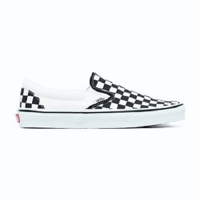
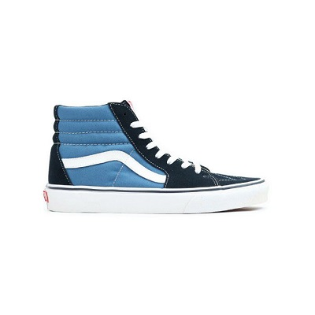
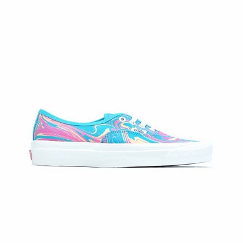
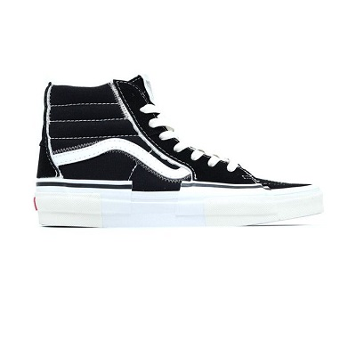

Tentang Dvans.sply
Dvans.sply adalah salah satu distributor resmi vans di
Indonesia. Misi kami adalah menyediakan platform terpercaya bagi para
penggemar dan kolektor vans untuk membeli produk vans yang mereka
inginkan. Kami memastikan platform ini ramah pengguna dan dapat
memudahkan anda untuk menemukan apa yang dicari, dan metode pembayaran
yang kami gunakan memastikan bahwa transaksi Anda aman dan terlindungi.
Di Dvans.sply, kami lebih dari sekadar pasar, kami adalah komunitas
penggemar vans Bergabunglah dengan kami hari ini dan mulailah menemukan
produk vans yang Anda cari
Vans adalah merek sepatu dan pakaian yang didirikan pada tahun 1966 di
California, AS, oleh Paul Van Doren. Awalnya dikenal sebagai "Van Doren
Rubber Company," perusahaan ini fokus pada pembuatan sepatu kasual
dengan sol karet tahan lama. Pada tahun 1976, Vans memperkenalkan model
sepatu "Era," yang kemudian menjadi ikonik. Vans mendapatkan
popularitasnya melalui budaya skateboard dan musik punk pada tahun
1970-an. Desain sepatu slip-on dengan motif kotak-kotak hitam dan putih,
dikenal sebagai "Checkerboard," menjadi salah satu ciri khas Vans. Pada
tahun 1982, Vans mulai menghadapi kesulitan keuangan dan mengajukan
kebangkrutan. Namun, mereka berhasil keluar dari situasi sulit itu
dengan memfokuskan upaya mereka pada pasar sepatu kasual dan
skateboarding. Merek ini meluncurkan berbagai model sepatu yang berbeda,
termasuk "Vans Slip-Ons" yang ikonik, yang menjadi sangat populer di
kalangan skateboarder dan musisi punk.
Pada tahun 1990-an, Vans semakin tumbuh dengan adanya permintaan yang
terus meningkat. Merek ini mulai memperluas lini produknya dengan
meluncurkan pakaian, aksesoris, dan barang-barang lainnya yang berkaitan
dengan gaya hidup skateboard. Selama beberapa dekade, Vans terus
berkembang dan berkolaborasi dengan berbagai seniman, desainer, dan
merek lain. Saat ini, Vans telah menjadi salah satu merek yang sangat
diakui di dunia streetwear dan terus menjadi ikon dalam dunia mode
kasual.
Rekomendasi Footwear Dvans.sply
Berikut merupakan 5 rekomendasi footwear yang bisa kamu koleksi di rumah
:

Vans Slip-On Checkerboard

Vans Authentic Red

Vans Sk8-Hi Navy

Vans Authentic OG Marble (Anaheim Factory)

Vans Sk8-Hi Reconstruct Black